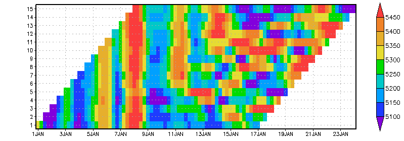

GrADS version 2.0 supports a fifth dimension for gridded data sets. This extra dimension has been implemented in a general way, but has been optimized for use with ensembles. Thus the name of the dimension is E or "ens". A good way to illustrate how the E dimension has been implemented in GrADS is through a series of plots using real data.
Let's begin with a 16-day forecast initialized 1 January. This is a 4-Dimensional data set that varies in space (X, Y, and Z) and time (T). To create the following display we fixed the latitude, longitude, and level dimensions and set time to span the entire forecast; the 1-D plot below shows the time series of predicted data values (16-day forecast of 500mb height at 45N, 60W):
Next, suppose you rerun the same forecast 20 more times, tweaking the initial conditions a little bit for each run -- you've created a 21-member ensemble forecast. All the ensemble members have the same length and start time. A classic technique for illustrating variability among ensemble members is to draw a "spaghetti" plot -- one contour line for each member. The following display shows a spaghetti plot for the same location and vertical level as drawn above, with one line for each ensemble member (16-day forecast of 500mb height at 45N, 60W from 21 ensemble members):
Using GrADS 2.0 and the ensemble dimension, we do not need to consider the ensemble members as separate data sets -- we can group them together and treat them as a single 5-dimensional data set. Thus we can display the same data in the spaghetti plot as a 2-D grid: Time on the X-axis vs. Ensemble Member on the Y-axis. Each contour line in the plot above becomes a row in the grid below, with grid boxes colored according to data values.
Because GrADS handles the ensemble members as a single grid, we can perform some calculations over the ensemble dimension. The GrADS analysis functions operate on E the same way they do on X, Y, Z, and T. Below is yet another version of the same data in the spaghetti plot; this time the display shows the ensemble mean (the red line), the ensemble mean +/- one standard deviation (green bars), and the minimum and maximum values over all members (blue whiskers):
The first step in creating a descriptor file for a 5-D gridded data set is to add an entry to describe the ensemble axis (E) using the keyword EDEF. The E-axis is always linear, and there is no "world coordinate" equivalent for ensembles. An ensemble member is called by its grid index (1, 2, etc.) or its name. The ensemble names are aliases for the grid indices, but are also used as the substitution string when file templating is in use. Ensemble names must be 15 characters or less, and contain only lower case alphanumeric characters. (In version 2.0.0 and later, mixed case ensemble names are allowed). The grid for each ensemble member must be identical in X, Y, and Z, and all members must have the same list of variables. The time axis is a bit more flexible -- ensemble members may have different start times and different lengths, but they must all share the same time increment. The axis described in the TDEF entry is an envelope that spans the time ranges of all ensemble members.
There are two different syntaxes for the EDEF entry: compact and expanded. The compact syntax is simpler and contains the number of ensembles, the "names" keyword, and a space-delimted list of the names for each ensemble member. The expanded syntax is a collection of records framed by EDEF and ENDEDEF; each record contains a name, individual time axis information, and GRIB2 codes (if they are required).
If all of the ensemble members have an identical time axis (i.e. length, initial time, and increment are the same for each one), and the data format is not GRIB2, then the members are distinguished only by their names, and the compact EDEF syntax may be used. For example:
EDEF 6 names e1 e2 e3 e4 e5 e6
EDEF 21 names cntrl p0 p1 p2 p3 p4 p5 p6 p7 p8 p9 n0 n1 n2 n3 n4 n5 n6 n7 n8 n9
If the ensemble members do not have identical time axes (i.e., their lengths or initial times are not the same), or if you need to include the GRIB2 codes, then you must use the expanded EDEF syntax. Individual ensemble records contain the ensemble name, its length, and initial time. If the data are in GRIB2 format, then some additional comma-delimited codes are added following the initial time. (See the EDEF reference page for more details.) Example #2 at the bottom of this page shows the TDEF and EDEF entries for a set of forecasts where members were initialized at staggered start times.
The EDEF entry is only required in a descriptor file if the data set varies in the E dimension. A 4-D data set does not require an "EDEF 1 names 1" entry. If EDEF is omitted, GrADS will know the data set is 4-D, and will set up a default E axis for internal use only. This is especially important if the descriptor file will be used to serve the data set via the GrADS Data Server.
To query the ensemble metadata once the file is opened, use the "q ens" command.
As you create the descriptor file for your 5-D ensemble data set, you must also consider how to organize the data. It is possible to have all data in one file, but it is more likely that a data set will be an aggretation of separate files, organized using templates. GrADS supports templating over the T and E dimensions, but there are some limitations on templating that depend on the data format. Note that the substitution strings for templating on T may be separated into several pieces (e.g. %y4, %m2, et al.) and can appear in different locations in the filename string in the DSET entry. For ensembles, the sole substitution string (%e) is the ensemble name (provided in the EDEF entry), which is limited to 15 characters. If you are templating over the ensemble dimension, there can be only one ensemble member per file. Some additional considerations for constructing and managing ensemble data sets based on data format are given below.
Binary Format: The structure of a multi-dimensional binary data set is determined by the order in which the horizonal grids are written to file. The building blocks are stacked in a sequence according to dimension. The sequence goes in the following order starting from the fastest varying dimension to the slowest varying dimension: longitude (X), latitude (Y), vertical level (Z), variable (VAR), time (T), and ensemble (E). 5-D ensemble data sets are created by concatenating 4-D data sets together -- the ensemble dimension varies outside of all the others. If the data format is binary and file templating is used for the time dimension, then file templating for the ensemble dimension must also be used. If the data format is binary and files are templated together only over the ensemble dimension, then the entire time series for each member must be contained in the individual data files; if the members have different lengths and start times, they must be padded with missing values so that the individual data files for each member are the same size. You can avoid padding your data files with missing data by using file templating over both the time and ensemble dimensions. Please see Example #3 below.
GRIB Format: The structure of a multi-dimensional GRIB data set is determined by the axis and variable declarations in the descriptor file; this information is contained in the index file created by the gribmap utility. The order in which the horizontal grids (records) are written to file is not as critical as it is for binary data. The GRIB2 format has an expanded set of header fields for ensemble metadata, so two records that are from different ensembles but otherwise identical may be distinguished. This is not the case for GRIB1. File templating on T and E in any combination is supported for GRIB2. If you are using the ensemble dimension with GRIB1, then templating for the ensemble dimension must be used and the data for each ensemble member must be in a separate file.
Self-Describing File Format: The structure of a multi-dimensional data set in NetCDF or HDF-SDS format is determined by the way the coordinate dimensions in the self-describing file are matched to the 5 grid dimensions in GrADS. This matching may be accomplished in three ways:
edef <SDF_dimension_name>
edef <SDF_dimension_name> <size>
edef <SDF_dimension_name> <size> names <list of names> Note that file templating on T and E in any combination is supported for the NetCDF and HDF-SDS formats (as of version 2.0.a5).
A lag ensemble is a collection of forecasts with different initialization times. It differs from the ensemble forecast described above because each member spans a different (shifted) time range. If you consider the 24-hour geopotential height forecast in each member of a lag ensemble data set, the fields will not be valid at the same time. Similarly if you consider the height fields from all members at a fixed valid time, each member will have a different lead time (offset from the initial time). Below is an illustration of a lag ensemble data set. The graphic is related to the example above because it shows similar 16-day forecasts of 500mb height at 45N, 60W, but in this case the 15 ensemble members were initialized at successive 12-hour intervals:

If you want to create an ensemble data set using GRIB forecasts with varying initial times, and the data files are GRIB1 or GRIB2 without any ensemble metadata (i.e., Product Definition Template 0 or 8), then you must use file templating over E and your ensemble names must appear somewhere in your data file names. It is not adequate to use only %iy %im %id %ih and %f3 in the DSET entry and the expanded form of EDEF to indicate the different start times of each ensemble member. This would uniquely match a file name for each time and member, but only for the special case of each member having a different initial time. If you had some ensemble members with the same start time, then the time metadata in the grib headers would be identical and there would be no way to distinguish the members. Omitting the %e in the DSET entry implicitly assumes that all members have identical time axes, and that all members are packed into one file for a given time.
A convenient way to set up a lag ensemble data set is to create symbolic links for the ensemble names that point to each directory containing a single forecast. Suppose you have a directory structure based on the YYYYMMDDHH of the forecast initialization time:
./2009010100/gfs.*.grb2
./2009010112/gfs.*.grb2
./2009010200/gfs.*.grb2
Create a set of symbolic links that associate an ensemble name with each directory:
./e1 -> ./2009010100
./e2 -> ./2009010112
./e3 -> ./2009010200
And the descriptor file would contain the following entries:
DSET ^./%e/gfs.%iy4%im2%id2%ih2.f%f3.grb2
...
TDEF 69 linear 00z1jan2009 6hr
EDEF 3
e1 65 00z1jan2009
e2 65 12z1jan2009
e3 65 00z2jan2009
ENDEDEF
The CFS daily hindcasts are an example of an ensemble data set with members that have different start times and different lengths. The hindcast members are nominally 9 months long, with unevenly staggered start times and identical end times. The following graphic shows CFS forecasts of 500mb height at 45N, 60W, illustrating the temporal coverage of the 15 ensemble members. A complete descriptor file for this data set is also provided.
dset ^z500.%e.feb.2000.cfs.data
title 5D NCEP CFS Ensemble Hindcast Initialized February 2000 2.5 degree/12-hourly grid
dtype grib
index ^z500.feb.2000.cfs.map
undef 9.999e+20
options yrev template
xdef 144 linear 0 2.5
ydef 73 linear -90 2.5
zdef 1 levels 1
tdef 593 linear 12z09jan2000 12hr
edef 15
m01 593 12z09jan2000
m02 591 12z10jan2000
m03 589 12z11jan2000
m04 587 12z12jan2000
m05 585 12z13jan2000
m06 573 12z19jan2000
m07 571 12z20jan2000
m08 569 12z21jan2000
m09 567 12z22jan2000
m10 565 12z23jan2000
m11 551 12z30jan2000
m12 549 12z31jan2000
m13 547 12z01feb2000
m14 545 12z02feb2000
m15 543 12z03feb2000
endedef
vars 1
z500 0 7,100,500 500mb Geopotential height [gpm]
endvars
@ z500 String units gpm
This example shows how you set up a data set with ensembles of different lengths and start times in binary format. There are 6 members, spanning a period of 20 years. The figure below illustrates the coverage in time of each member. Below the figure is the data descriptor file. Note that if this data set was only templated over E and not templated over T, then the binary file for each member would have to be padded with missing values so that the data file for each member was the same size, spanning the entire time axis.
DSET /data/examples/monthly.%y4%m2.%e.dat
TITLE Example of Ensembles in Binary Format
undef -9.99e8
options template
XDEF 360 LINEAR -179.5 1.0
YDEF 180 LINEAR -89.5 1.0
ZDEF 1 linear 1 1
TDEF 240 LINEAR 1jan1988 1mo
EDEF 6
e1 48 1jan1988
e2 83 1jan1991
e3 101 1jan1992
e4 152 1may1995
e5 128 1may1997
e6 96 1jan2000
ENDEDEF
VARS 8
lhf 0 99 latent heat flux (W/m**2)
tx 0 99 zonal wind stress (N/m**2)
ty 0 99 meridional wind stress (N/m**2)
shf 0 99 sensible heat flux (W/m**2)
hum 0 99 surface air (~10-m) specific humidity (g/kg)
pw 0 99 lowest 500-m precipitable water (g/cm**2)
wpd 0 99 10-m wind speed (m/s)
hd 0 99 sea-air humidity difference (g/kg)
ENDVARS